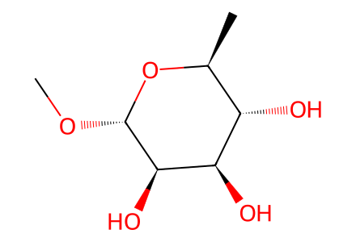
CO[C@@H]1O[C@@H](C)[C@H](O)[C@@H](O)[C@H]1O13 molecular records; 9 preparation events; 2 selected paths. Eight-event target route from commercial methyl alpha-L-rhamnopyranoside and observed methanolysis side branch, bound to main-paper experimental procedures and Schemes 3/4. Names parsed locally by cached OPSIN and checked against source drawings/formulas. Proposed mechanistic species 17/18 and the unobserved desired tetraol 13 are not isolated preparations. Anomeric/diastereomeric mixtures retain unspecified centers.
完整 JSON · 逐步 CSV · 路线序列 · SDF · HRMS 核对
| 事件 | 分子连接 | 报告产率 | Canonical reaction SMILES |
|---|---|---|---|
| E01 | start → 8 | 8: 96% | CO[C@@H]1O[C@@H](C)[C@H](O)[C@@H](O)[C@H]1O>>CO[C@@H]1O[C@@H](C)[C@H](O)[C@@H](OS(=O)(=O)c2ccc(C)cc2)[C@H]1O |
| E02 | 8 + CO2 → 9 | 9: 70% | CO[C@@H]1O[C@@H](C)[C@H](O)[C@@H](OS(=O)(=O)c2ccc(C)cc2)[C@H]1O.O=C=O>>CO[C@@H]1O[C@@H](C)[C@@H]2OC(=O)O[C@@H]2[C@H]1O |
| E03 | 9 + allyl-methyl-carbonate → 10 | 10: 87% | C=CCOC(=O)OC.CO[C@@H]1O[C@@H](C)[C@@H]2OC(=O)O[C@@H]2[C@H]1O>>C=CCO[C@H]1[C@H](OC)O[C@@H](C)[C@@H]2OC(=O)O[C@@H]21 |
| E04 | 10 → 11 | 11: 75% | C=CCO[C@H]1[C@H](OC)O[C@@H](C)[C@@H]2OC(=O)O[C@@H]21>>C=CCO[C@H]1C(O)O[C@@H](C)[C@@H]2OC(=O)O[C@@H]21 |
| E05 | 11 + wittig-reagent → 12 | 12: 97% | C=CCO[C@H]1C(O)O[C@@H](C)[C@@H]2OC(=O)O[C@@H]21.CCOC(=O)C=P(c1ccccc1)(c1ccccc1)c1ccccc1>>C=CCO[C@@H](/C=C\C(=O)OCC)[C@@H]1OC(=O)O[C@@H]1[C@@H](C)O |
| E06 | 12 → 14 | 89% combined mixture yield | C=CCO[C@@H](/C=C\C(=O)OCC)[C@@H]1OC(=O)O[C@@H]1[C@@H](C)O>>C=CCO[C@H]1C(CC(=O)OC)O[C@@H]([C@H](C)O)[C@@H]1O |
| E07 | 12 → 15 | 15: 80% | C=CCO[C@@H](/C=C\C(=O)OCC)[C@@H]1OC(=O)O[C@@H]1[C@@H](C)O>>C=CCO[C@H]1C=CC(=O)O[C@H]1[C@H](O)[C@@H](C)O |
| E08 | 15 → 16 | 16: 90% | C=CCO[C@H]1C=CC(=O)O[C@H]1[C@H](O)[C@@H](C)O>>C=CCO[C@@H]1[C@H]2OC(=O)C[C@@H]1O[C@@H](C)[C@@H]2OC(C)=O |
| E09 | 16 → 2 | 2: 66% | C=CCO[C@@H]1[C@H]2OC(=O)C[C@@H]1O[C@@H](C)[C@@H]2OC(C)=O>>CC(=O)O[C@@H]1[C@@H]2OC(=O)C[C@H](O[C@H]1C)[C@@H]2O |

CO[C@@H]1O[C@@H](C)[C@H](O)[C@@H](O)[C@H]1O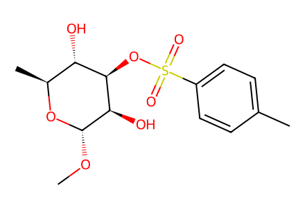
CO[C@@H]1O[C@@H](C)[C@H](O)[C@@H](OS(=O)(=O)c2ccc(C)cc2)[C@H]1O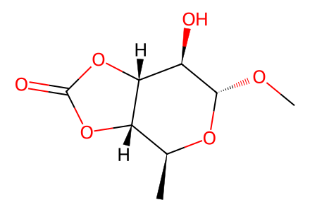
CO[C@@H]1O[C@@H](C)[C@@H]2OC(=O)O[C@@H]2[C@H]1O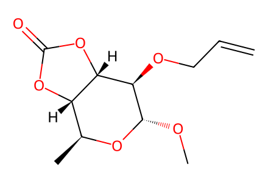
C=CCO[C@H]1[C@H](OC)O[C@@H](C)[C@@H]2OC(=O)O[C@@H]21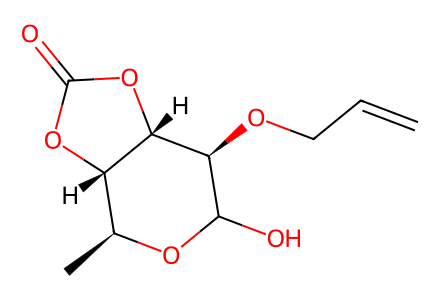
C=CCO[C@H]1C(O)O[C@@H](C)[C@@H]2OC(=O)O[C@@H]21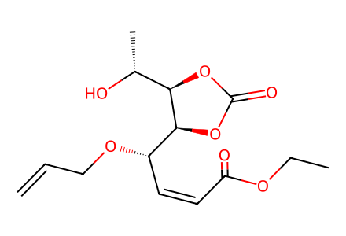
C=CCO[C@@H](/C=C\C(=O)OCC)[C@@H]1OC(=O)O[C@@H]1[C@@H](C)O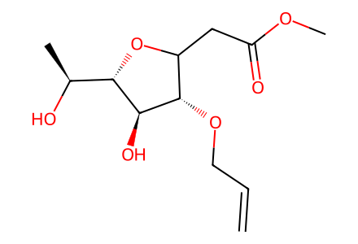
C=CCO[C@H]1C(CC(=O)OC)O[C@@H]([C@H](C)O)[C@@H]1O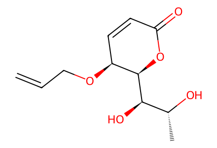
C=CCO[C@H]1C=CC(=O)O[C@H]1[C@H](O)[C@@H](C)O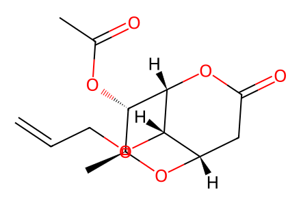
C=CCO[C@@H]1[C@H]2OC(=O)C[C@@H]1O[C@@H](C)[C@@H]2OC(C)=O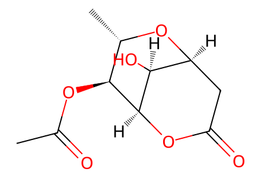
CC(=O)O[C@@H]1[C@@H]2OC(=O)C[C@H](O[C@H]1C)[C@@H]2O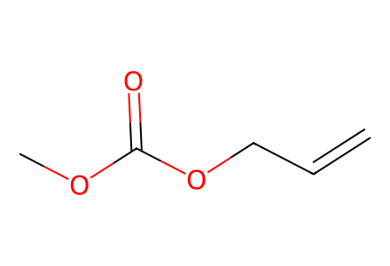
C=CCOC(=O)OC
CCOC(=O)C=P(c1ccccc1)(c1ccccc1)c1ccccc1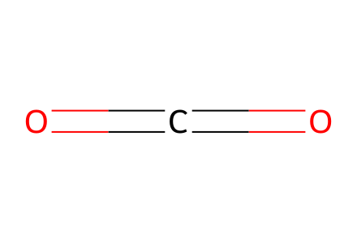
O=C=O